1. vježba - font
Radili smo svoj vlastiti font.
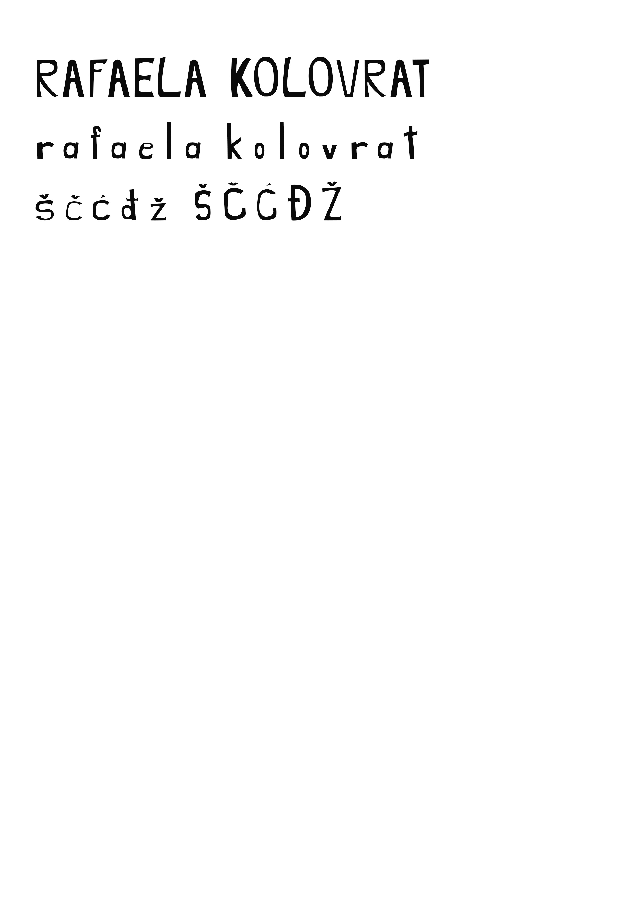2. vježba - Bezierova krivulja, precizno crtanje
Manipuliranje fontom u Adobe Illustratoru.
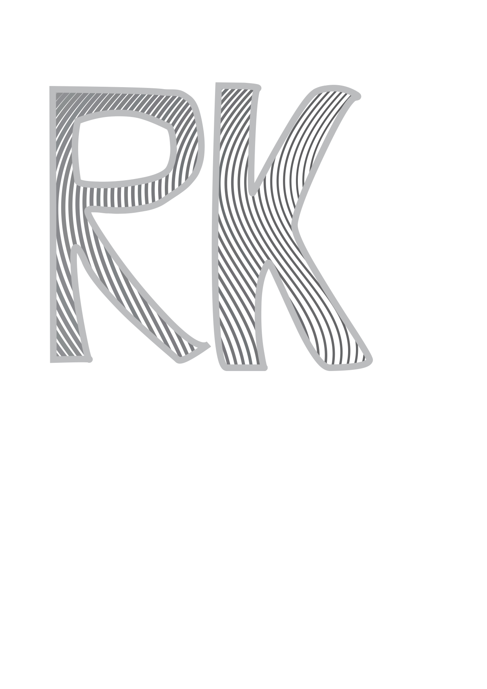3. vježba - boja, transformacija
Skiciranje, bojanje i transformiranje zadanih elemenata.
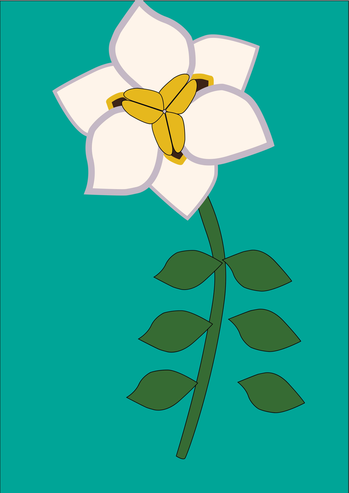 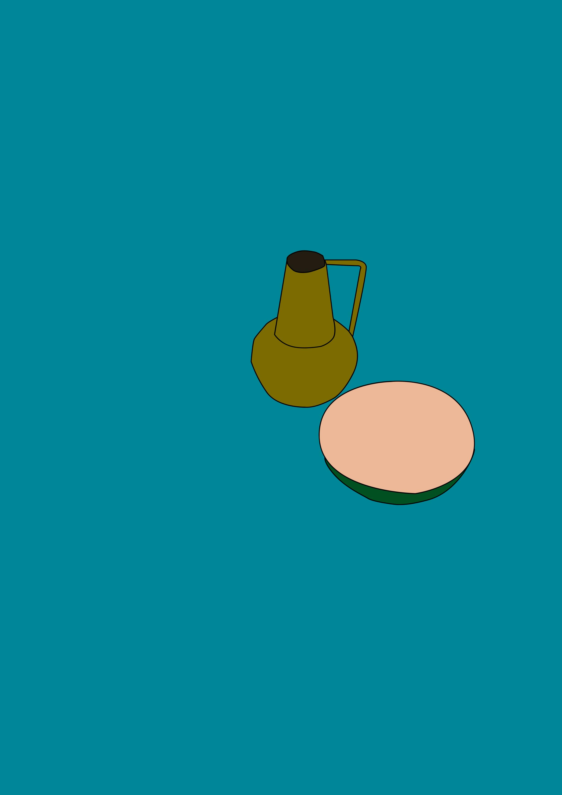4. vježba - gradijent, transparencija
Izrada složenih objekata koji se sastoje od više staza metodama spajanja (Unite/Compound path) ili oduzimanja oblika (Difference/Subtract)
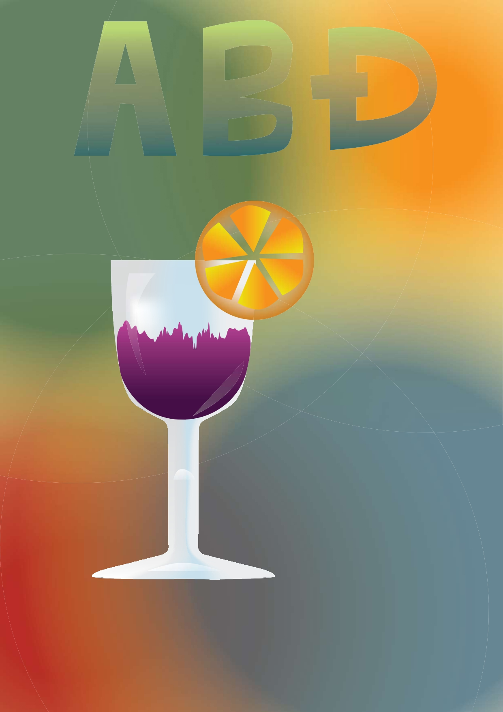 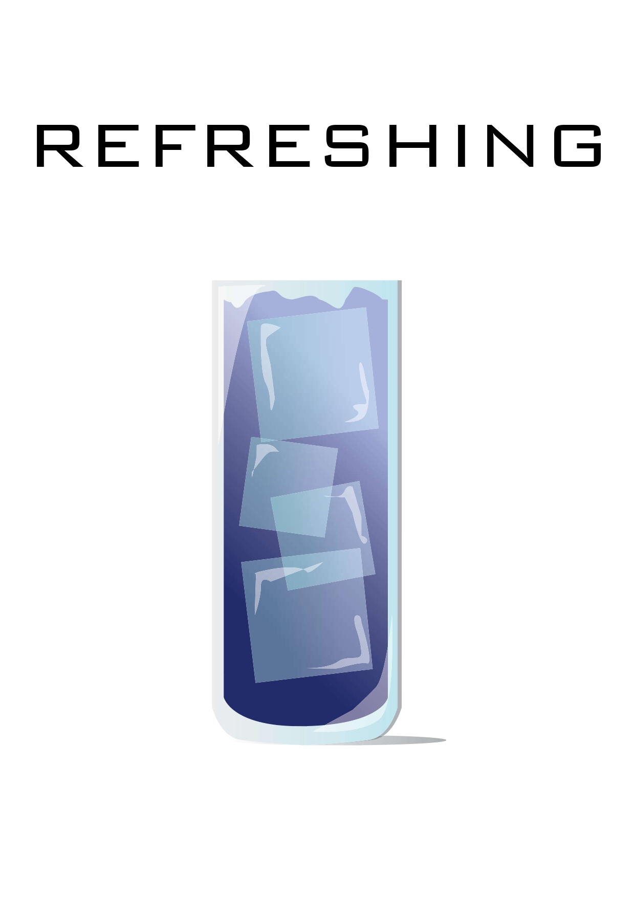5. vježba - retuširanje
"Popravljanje" slika.
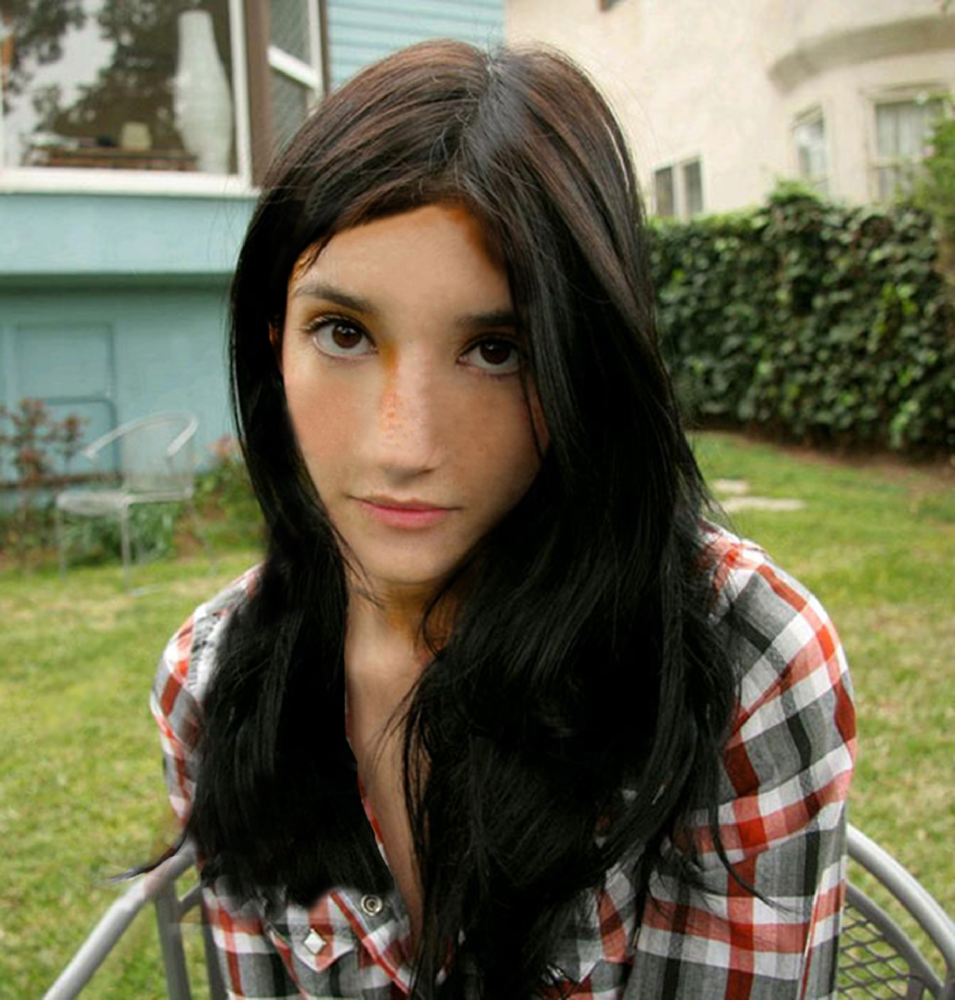 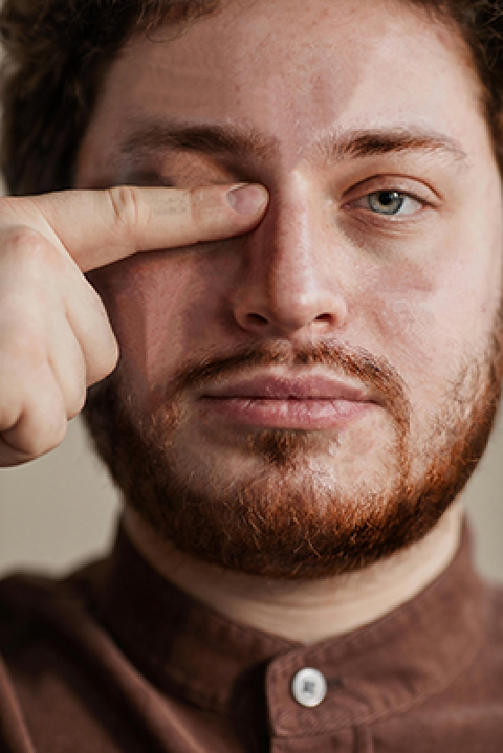6. vježba - koloriranje
Dodavanje boja na slike sa crno-bijelim tonovima.
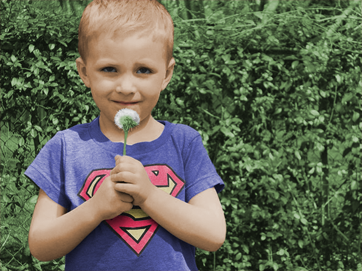 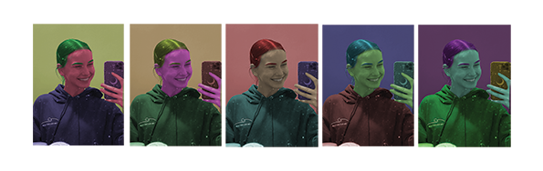7. vježba - fotomontaža
Više slika ili objekata sa različitih slika na jednom mjestu.
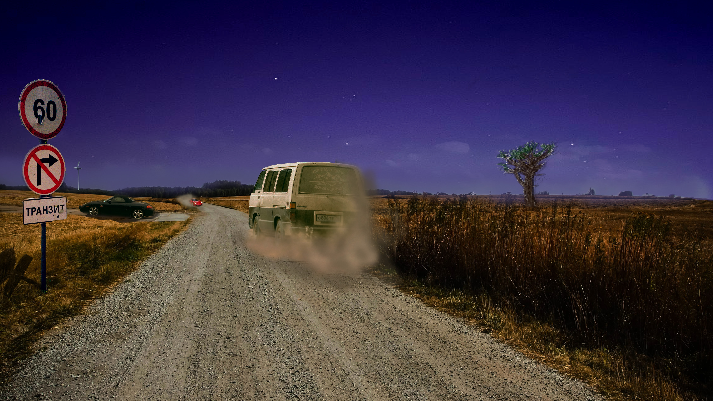8. vježba - cinemagraf
Samo se jedan objekt pokreče u gif formatu.

9. vježba - video obrada
Obrada video isječaka i teksta.